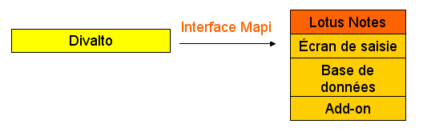
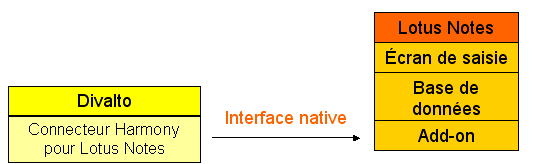
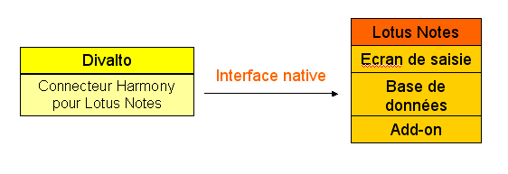

Divalto communique avec Lotus Notes par l'intermédiaire de deux interfaces :
L'interface standard MAPI, liée à la messagerie.
Une interface native, permettant d'accéder aussi bien à la messagerie qu'à la base de données des objets non liés à la messagerie (calendrier, contacts).
Envoi de messages avec Lotus Notes
Il faut distinguer les deux cas d’envois de message :
Envois précédés d’une saisie « manuelle » du message.
Exemple : certains zooms de Divalto proposent un bouton « Mail » permettant à l’utilisateur de saisir le texte du message.
Ici, Lotus Notes est ouvert sur la boîte de dialogue d’envoi de message et c'est l'interface MAPI qui est utilisée.

Envois entièrement automatisés.
Exemple : un événement (création de tiers, …) générant un flash.
Ici, Lotus Notes est ouvert de manière cachée et c'est l'interface native qui est utilisée.

Gestion d’informations personnelles avec Lotus Notes
Pour accéder à la base de données des objets non liés à la messagerie, Divalto utilise l'interface native de Lotus.
